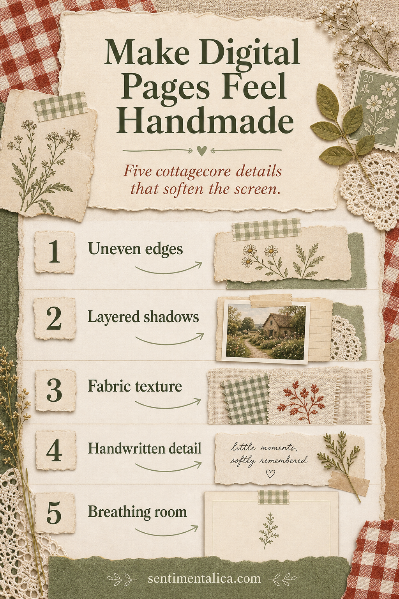
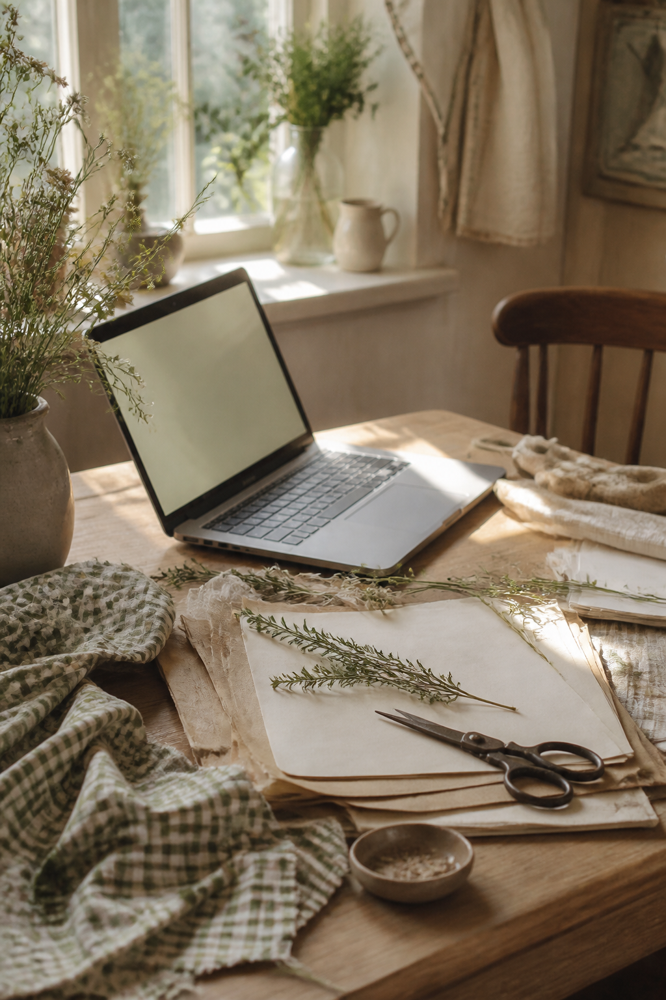

Cottagecore digital pages feel convincing when they carry signs of touch. The goal is not to cover the screen with lace and flowers, but to introduce small irregularities that make a sheet feel collected.

Begin with one imperfect edge
A torn edge is strongest when the other edges remain clean. Mask one side with a deckled shape or scan a real scrap. Repeated imperfection quickly becomes another obvious digital pattern.
Build shadows from one light source
If light falls from the upper left, every paper and ribbon should cast a faint shadow down and right. Vary blur according to thickness: lace almost touches the page while a photograph lifts higher.

Add texture at a whisper
Use linen, faded gingham, or fibrous paper at low contrast. Add one short handwritten detail, then leave an area with only paper tone or a tiny herb. Dense clusters feel richer beside something quiet.
Visuals in this article were created with AI assistance and art-directed for Sentimentalica.
Explore more gentle paper ideas in the Sentimentalica journal archive.